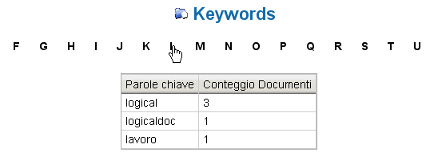

Visualizzazione Parole Chiave |
La pagina di Visualizzazione Parole Chiave consente di navigare l'archivio utilizzando le parole chiave(Keyword) assegnate ai documenti.
Selezionando una lettera dell'alfabeto è possibile visualizzare tutte le parole chiave che hanno quell'iniziale.

Cliccando su una parola verranno mostrati i documenti ad essa associati con alcune informazioni essenziali.
Per scaricare un documento sarà sufficiente selezionare il suo nome dall'elenco.